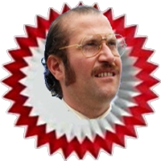

<nav class="navbar fixed-top navbar-expand-lg navbar-dark bg-dark" *ngIf="authService.isAuthenticated()">
    <a class="navbar-brand" routerLink="/home">
        
    </a>

    <button class="navbar-toggler" type="button" data-toggle="collapse" data-target="#navbarSupportedContent"
        aria-controls="navbarSupportedContent" aria-expanded="false" aria-label="Toggle navigation">
        <span class="navbar-toggler-icon"></span>
    </button>

    <div class="collapse navbar-collapse" id="navbarSupportedContent">
        <ul class="navbar-nav mr-auto">
            <!-- <li class="nav-item">
                <a class="nav-link" routerLink="/new-quote">Add a new quote</a>
            </li> -->
        </ul>

        <button class="btn btn-outline-danger my-2 my-sm-0 align-middle" (click)="openDialog()">
            <mat-icon class="align-middle">power_settings_new</mat-icon>
        </button>
    </div>
</nav>

<div id="root_container" [ngStyle]="{'padding-top': (authService.isAuthenticated()) ? '65px' : '0px'}">
    <router-outlet></router-outlet>
</div>